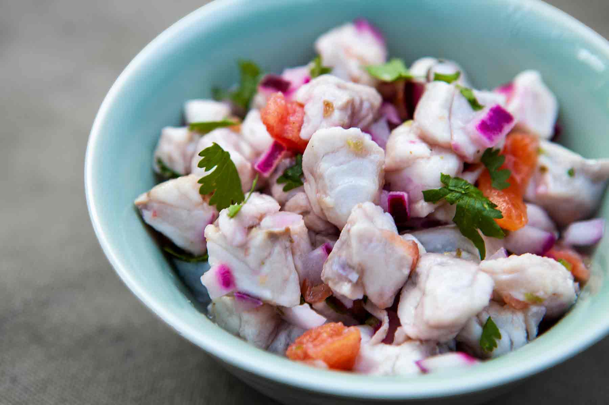

Ceviche

Ceviche is a South American seafood dish originally from what is the modern day countries of Peru, Ecuador and Chile, typically made from fresh raw fish cured in fresh citrus juices, most commonly lime or lemon.
Ingredients
- 500g firm white fish fillets, such as haddock, halibut or pollack, skinned and thinly sliced
- juice 8 limes (250ml/9fl oz), plus extra wedges to serve
- 1 red onion, sliced into rings
- handful pitted green olives, finely chopped
- 2-3 green chillies, finely chopped
- 2-3 tomatoes, seeded and chopped into 2cm pieces
- bunch coriander, roughly chopped
- 2tbso extra-virgin olive oil
- good pinch caster sugar
- tortilla chips, to serve
Steps
- In a large glass bowl, combine the fish, lime juice and onion. The juice should completely cover the fish; if not, add a little more. Cover with cling film and place in the fridge for 1 hr 30 mins
- Remove the fish and onion from the lime juice (discard the juice) and place in a bowl. Add the olives, chilies, tomatoes, coriander and olive oil, stir gently, then season with a good pinch of salt and sugar. This can be made a couple of hours in advance and stored in the fridge. Serve with tortilla chips to scoop up the ceviche and enjoy with a glass of cold beer.
Go back